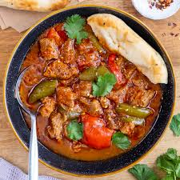

Briyani:

- Origins:
The name biryani comes from the Persian phrase "birinj biriyan," which means "fried rice". Some say the dish originated in Iran and was brought to the Indian subcontinent by the Mughals in the 1500s. Others suggest that biryani has roots in Central Asia, where people combined rice, meat, and dairy with local spices and herbs.
Spicy Beef Curry:
- Origins:
It was introduced to English cuisine from Anglo-Indian cooking in the 17th century, as spicy sauces were added to plain boiled and cooked meats. Curry was first served in coffee houses in Britain from 1809, and has been increasingly popular in Great Britain, with major jumps in the 1940s and the 1970s.